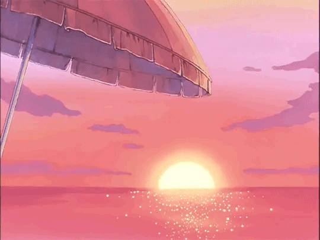

Shifting-ul este actul de transport al conștiinței unei persoane către o viață dorită, o altă lume/altă dimensiune, realitatea dorită sau stilul de viață dorit.
Prin „transportul conștiinței” înțelegem că noi devenim conștienți de faptul că există o infinitate de alegeri care ar putea deveni realitate.
Shifting-ul este Știința Cuantică și este legat și atașat de Salturile Cuantice și Multivers.
Modul în care atomii se leagă pentru a forma molecule, care sunt mereu în mișcare constantă, este același mod în care energia este întotdeauna în mișcare.
Deoarece energia există în întregul univers, aceasta este întotdeauna într-o stare de mișcare. Așadar, în fiecare milisecundă există o schimbare în realitate deoarece în fiecare milisecundă totul în univers se mișcă/vibrează/este în mișcare.
Acest lucru este numit un shift în realitate și schimbare în realitate.
Noi nu suntem în aceeași realitate ca aceea în care ne-am născut, de aceea nu există așa ceva ca o „realitate originală”,
pentru că realitatea este întotdeauna în mișcare și ne schimbăm în fiecare secundă.
Realitatea nu este niciodată statică. Toate realitățile există împreună în același timp deoarece timpul nu este liniar, ci doar o simplă iluzie.
De aceea oamenii pot să se schimbe sau să „călătorească în timp” către trecut sau viitor, deoarece toate liniile temporale există în același timp.
Shifting-ul este legat de natura realității, care este întotdeauna maleabilă. Sunt sigură că ați auzit cu toții despre Universuri Paralele și cum fiecare acțiune
din viața voastră v-a adus într-o realitate specifică.
Cum fiecare acțiune pe care ați întreprins-o în viața voastră v-a adus consecințe negative, pozitive sau neutre, conducându-vă la un rezultat specific al realității.
La fel ca atunci când jucați un joc Otome, fiecare personaj cu care interacționați cel mai mult și fiecare alegere pe care o faceți vă va conduce către un rezultat specific al realității.
Când vorbim despre schimbarea realităților în general, vorbim de schimbarea CONȘTIENTĂ către o realitate DORITĂ cu care îți aliniezi conștiința.
Tu deja exiști în toate realitățile, ceea ce vei descoperi mai departe citind acest site. Aș dori să adaug și faptul că mulți dintre noi au experimentat deja schimbări
în copilărie, dar probabil nu au realizat sau nu au observat acest lucru. Oamenii pot călători accidental între realități fără să intenționeze acest lucru, totuși pot reveni
întotdeauna la această realitate specifică dacă aleg să o facă.
Pentru a rezuma ce este shifting-ul, este cea mai mică schimbare în realitate, dar poate fi și o alegere conștientă de a alege o realitate în care decidem să
ne aliniem printre toate realitățile infinite care există în întregul Multivers. Adică să-ți schimbi conștientizarea/transportarea conștiinței într-o realitate dorită.
În realitate, nu creezi sau formezi nimic, ci doar mediezi procesul în felul tău.
Shiftingul nu are pericole sau consecințe, pentru că fiecare conștiință are liber arbitru și este liberă în natură, în plus, controlezi experiența ta de shifting.

Multiversul este un concept care descrie existența a multiplelor realități care pot coexista în mai multe universuri, fiind o combinație a unor universuri, realități și dimensiuni infinite într-un singur Multivers. Multiversul este ansamblul universurilor infinite care există. Multiversul conține toate realitățile alternative posibile. De exemplu, realitatea noastră actuală este doar un univers; prin shifting este posibil să ajungi la orice realitate dorită.
Un Omnivers cuprinde toate multiversele multiple din întreaga infinitate a acelui omnivers și continuă în continuare.
Un Infinivers este tot ceea ce există, vizibil sau invizibil (materie întunecată sau energie), universul reprezentând partea observată a Infiniversului.
Interpretarea multor lumi a Mecanicii Cuantice afirmă că toate rezultatele posibile ale măsurătorilor cuantice apar într-un univers. Acest lucru înseamnă că de fiecare dată când se face o măsurare, o observație sau o decizie, universul se divide în câte universuri sunt posibile rezultate ale acesteia.
Ni s-a spus încă de la o vârstă fragedă că aceasta este singura realitate, singurul univers, ceea ce este complet fals. Trăim într-un multivers, cu posibilități infinite, realități infinite, versiuni infinite ale noastre cu vieți diferite.
Există diferite moduri de a categoriza tipurile de multiversuri și universuri, deoarece unele sau toate teoriile pot fi corecte. Fizicianul Max Tegmark a propus existența a patru niveluri de multiversuri, fiecare conținând multe universuri.
Nivelul 1: duplicații infinite ale universului nostru.
Nivelul 2: universuri cu constante fizice diferite.
Nivelul 3: universuri separate de măsurători și alegeri cuantice.
Nivelul 4: universuri complet diferite de al nostru.
Pentru a înțelege bine shiftingul, trebuie să înțelegeți că această realitate nu este singura realitate.
Pentru acestă metodă vei avea nevoie de un script fizic pe care îl vei pune sub pernă. Odată ce ai făcut acest lucru, culcă-te în pat și meditează timp de aproximativ 10/15 minute sau ascultă subliminale.
În primul rând, trebuie să citești scriptul tău. Dacă nu ai unul fizic, gândește-te la ceva din visul tău lucid sau ascultă muzică.
Această metodă este foarte simplă. Tot ce trebuie să faci este să-ți închizi ochii și să te imaginezi în visul tău lucid.
Găsește un videoclip sau o meditație ghidată care include sunete de bătăi ale inimii.
În primul rând, așază-te într-o poziție confortabilă cu ochii închiși și vizualizează-te în realitatea dorită.
ATENȚIE!!! Există o multitudine de metode, iar shiftuitul se poate realiza și fără acestea.